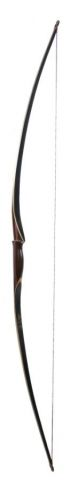

Bow types

LONGBOW
A longbow is a type of bow that is tall, roughly equal to the height of the person who uses it, this will allow its user a fairly long draw, at least to the jaw,
the average length of arrowshafts recovered from the 1545 sinking of the Mary Rose is 75 cm.
A longbow is not significantly recurved. Its limbs are relatively narrow so that they are circular or D-shaped in cross section.
Flatbows can be just as long; the difference is that, in cross-section, a flatbow has limbs that are approximately rectangular.
Organizations which run archery competitions have set out formal definitions for the various classes,
many definitions of the longbow would exclude some medieval examples, materials, and techniques of use.
According to the British Longbow Society, the English longbow is made so that its thickness is at least 62.5 procents of its width,
as in Victorian longbows, and is widest at the handle. This differs from the Medieval longbow, which had a thickness between 33 procent and 75 procent of the width.
Also, the Victorian longbow does not bend throughout the entire length, as does the medieval longbow. Longbows have been used for hunting and warfare,
by many cultures around the world, a famous example being the English longbow, during the Middle Ages.
Because the longbow can be made from a single piece of wood, it can be crafted relatively easily and quickly.
Amateur bowyers today can craft a longbow in about ten to twenty hours, while highly skilled bowyers, such as those who produced medieval English longbows,
can craft wooden longbows in just a few hours.
One of the simpler longbow designs is known as the self bow. By definition, a self bow is made from a single piece of wood.
Truly traditional English longbows are self bows, made from yew wood. The bowstave is cut from the radius of the tree so that the sapwood
on the outside of the tree becomes the back two thirds and the belly, the remaining one third, is heartwood. Yew sapwood is good only in tension,
while the heartwood is good in compression. However, one must make compromises when making a yew longbow, as it is difficult to find perfect unblemished yew.
The demand for yew bowstaves was such that by the late 16th century, mature yew trees were almost extinct in northern Europe.
In other desirable woods such as Osage orange and mulberry the sapwood is almost useless and is normally removed entirely.

RECURVE BOW
A recurve bow has tips that curve away from the archer when the bow is unstrung. By one technical definition,
the difference between recurve and other bows is that the string touches sections of the limbs of recurve bows when the bow is strung.
A recurve bow stores more energy than an equivalent straight-limbed bow, potentially giving a greater amount of cast to the arrow.
A recurve will permit a shorter bow than the simple bow for a given arrow energy and this form was often preferred by archers in environments where long weapons could be cumbersome,
such as in brush and forest terrain, or while on horseback. By contrast, the traditional straight longbow tends to stack, that is,
the required draw force increases more rapidly per unit of draw length as the string is drawn back.
Recurved limbs also put greater strain on the materials used to make the bow, and they may make more noise with the shot.
Extreme recurve may make the bow unstable when being strung. An unstrung recurve bow can have a confusing shape and many Native American weapons,
when separated from their original owners and cultures, were incorrectly strung backwards and destroyed when attempts were made to shoot them.
The unqualified phrase recurve bow or just a recurve in modern archery circles will usually refer to a typical modern recurve bow,
as used by archers in the Olympics and many other competitive events. It will employ advanced technologies and materials.
The limbs are usually made from multiple layers of fiberglass, carbon and/or wood on a core of carbon foam or wood. The riser
the handle section of the bow is generally separate and is constructed from wood, carbon, aluminium alloy or magnesium alloy.
Several manufacturers produce risers made of carbon fibre with metal fittings or aluminium with carbon fibre.
Risers for beginners are usually made of wood or plastic. The synthetic materials allow predictable manufacture for consistent performance.
The greater mass of a modern bow is itself an aid to stability, and therefore to accuracy.
COMPOUND BOW
A compound bow is a modern bow that uses a levering system, usually of cables and pulleys, to bend the limbs.
The limbs of a compound bow are usually much stiffer than those of a recurve bow or longbow.
This limb stiffness makes the compound bow more energy-efficient than other bows, but the limbs are too stiff to be drawn comfortably with a string attached directly to them.
The compound bow has its string attached to pulleys aka. cams, and one or both of the pulleys have one or more cables attached to the opposite limb.
When the string is drawn back, the string causes the pulleys to turn. This causes the pulleys to pull the cables, which in turn causes the limbs to bend and thus store energy.
The use of this levering system gives the compound bow a characteristic draw-force curve which rises to a peak weight and then lets off to a lower holding weight.
The compound bow is little-affected by changes in temperature and humidity and it gives superior accuracy, velocity, and distance in comparison to other bows.
The compound bow was first developed in 1966 by Holless Wilbur Allen in Missouri, and a US patent was granted in 1969. The compound bow has become increasingly popular.
In the United States, the compound is the dominant form of bow.